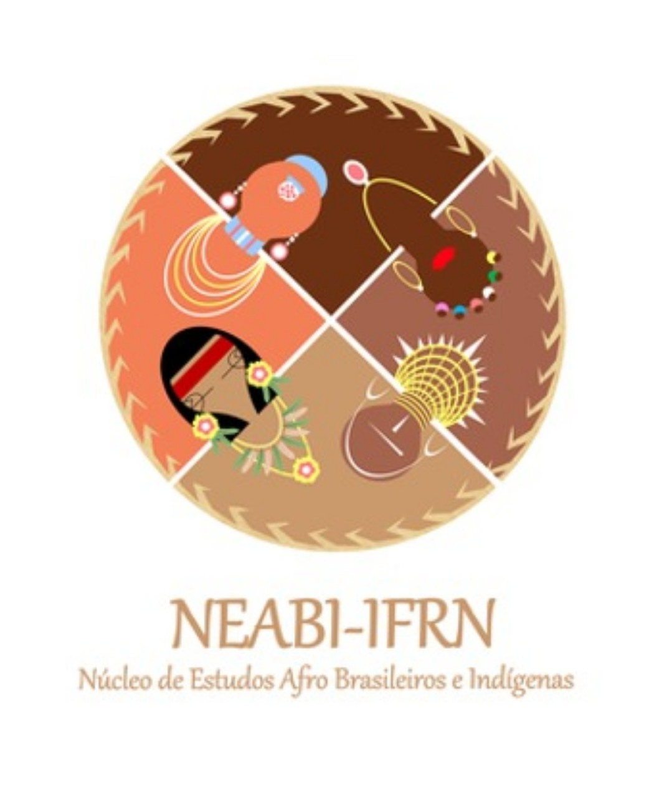

Início / Sobre
Sobre o NEABI

O que é o NEABI?
NEABI no IFRN — Campus Currais Novos
Por que esse trabalho importa
A importância do NEABI no campus
Trajetória
O que o NEABI faz no campus
Projeto do site
Sobre este site
Bolsistas responsáveis: